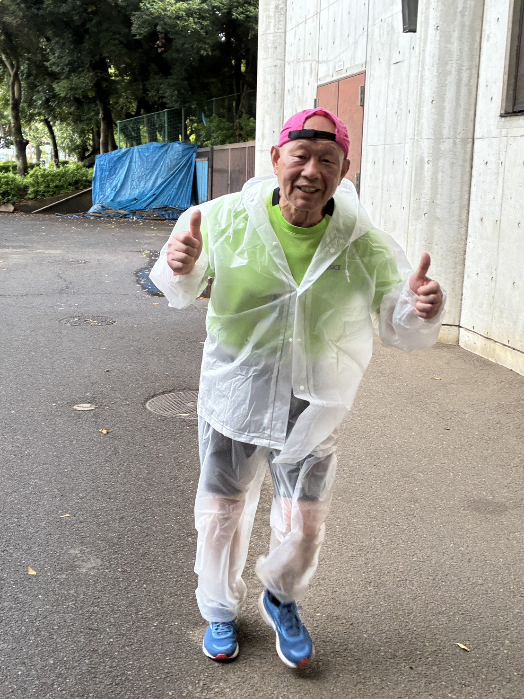

2026-06-03 06:14:06
2026年6月3日（水）平塚総合公園 晴 気温12時0分20.0℃ 担当（田中）
| No | 白鷺 | 氏名 | 種目 | タイム | フル百 |
|---|---|---|---|---|---|
| 1 | 30 | 竹田 昭彦 | フル | 9:42:19 | 3 |
| 2 | 98 | 田中 国貞 | 13.6km | 3:10:00 | 746 |
| 3 | 403 | 飯田 和好 | 3.1km | 0:35:36 | 881 |
今日は台風6号が通過しました。 どうも強そうなので中止を検討していたのですが、竹田さんの 「いや、やるよ」との鋼鉄の意思に押されて開催しました。 あの風雨の中見事に完走され900回に又一歩近づかれました。 3名規定に一人足りなく、お近くの飯田事務局長の助けを借りて 大会は成立しました。ありがとうございました。 担当 田中

唯一完走した竹田さん